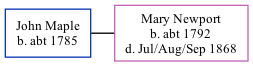

John Maple, the husband of Mary Newport (the four times great-aunt of Nigel Horne), was born in Littlebourne, Kent, England c. 17851. In 1861, he lived in Ickham, Kent, England1.
Citations
1861 England Census Online publication - Provo, UT, USA: The Generations Network, Inc., 2005.Original data - Census Returns of England and Wales, 1861. Kew, Surrey, England: The National Archives of the UK (TNA): Public Record Office (PRO), 1861. Data imaged from the National
Family Tree

Interactive Map
Map
Generated by ged2site. Last updated on Feb 18, 2025